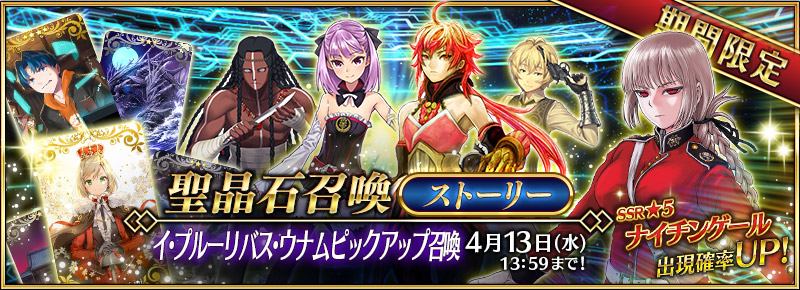

【聖晶石召喚（ストーリー）】
期間限定！イ・プルーリバス・ウナム召喚開催！SSRナイチンゲールが初登場！

◆「イ・プルーリバス・ウナムピックアップ召喚」期間◆
期間：2016年3月30日(水)19:00～4月13日(水) 13:59まで
第五章公開を記念して、ストーリー召喚にてイ・プルーリバス・ウナムピックアップ召喚を開催！
※第五特異点に到達していない状態でもイ・プルーリバス・ウナムピックアップ召喚を行えます。
「第五特異点 北米神話大戦 イ・プルーリバス・ウナム」で活躍するサーヴァント「★5（SSR）ナイチンゲール」、「★4（SR）エレナ・ブラヴァツキー」、「★4（SR）ラーマ」、「★3（R）ジェロニモ」 、「★3（R）ビリー・ザ・キッド」が初登場！
更に、新規概念礼装「★5（SSR）理想の王聖」、「★4（SR）レコードホルダー」、「★3（R）波濤の獣」も初登場。
ピックアップ期間中は、上記初登場サーヴァント及び概念礼装の出現確率がアップ！
※上記初登場サーヴァント及び概念礼装は、ピックアップ召喚期間終了後もストーリー召喚にて排出されます。
10回召喚では★4（SR）以上1枚確定と★3（R）以上のサーヴァント1騎確定！
※★4（SR）以上確定にはサーヴァントと概念礼装が含まれます。
※★3（R）以上のサーヴァント1騎確定は、下記の提供割合とは異なります。
※「サーヴァント出現確率UP」とは同レアリティの他のサーヴァントより出現確率が高く設定されていることを意味します。聖晶石召喚 提供割合
| サーヴァント | 概念礼装 | ||
|---|---|---|---|
| ★★★★★ | 1.0% | ★★★★★ | 4.0% |
| ★★★★ | 3.0% | ★★★★ | 12.0% |
| ★★★ | 40.0% | ★★★ | 40.0% |
■初登場サーヴァント
| クラス | レアリティ | 名称 |
|---|---|---|
| バーサーカー | ★★★★★ | ナイチンゲール 出現確率UP！ |
| セイバー | ★★★★ | ラーマ 出現確率UP！ |
| キャスター | ★★★★ | エレナ・ブラヴァツキー 出現確率UP！ |
| アーチャー | ★★★ | ビリー・ザ・キッド 出現確率UP！ |
| キャスター | ★★★ | ジェロニモ 出現確率UP！ |
※上記のサーヴァントは、ピックアップ召喚期間終了後、聖晶石召喚（ストーリー）に追加されます。
■新規概念礼装
| レアリティ | 名称 |
|---|---|
| ★★★★★ | 理想の王聖 出現確率UP！ |
| ★★★★ | レコードホルダー 出現確率UP！ |
| ★★★ | 波濤の獣 出現確率UP！ |
※上記の概念礼装は、ピックアップ召喚期間終了後、聖晶石召喚（ストーリー）に追加されます。
■サーヴァント一覧
| クラス | レアリティ | 名称 |
|---|---|---|
| セイバー | ★★★★★ | アルトリア・ペンドラゴン |
| セイバー | ★★★★★ | アルテラ |
| セイバー | ★★★★★ | モードレッド |
| アーチャー | ★★★★★ | オリオン |
| アーチャー | ★★★★★ | アルジュナ |
| アーチャー | ★★★★★ | ニコラ・テスラ |
| ランサー | ★★★★★ | カルナ |
| ライダー | ★★★★★ | フランシス・ドレイク |
| ライダー | ★★★★★ | メイヴ |
| アサシン | ★★★★★ | ジャック・ザ・リッパー |
| キャスター | ★★★★★ | 諸葛孔明 〔エルメロイⅡ世〕 |
| キャスター | ★★★★★ | 玉藻の前 |
| バーサーカー | ★★★★★ | ヴラド三世 |
| バーサーカー | ★★★★★ | クー・フーリン 〔オルタ〕 |
| ルーラー | ★★★★★ | ジャンヌ・ダルク |
| セイバー | ★★★★ | アルトリア・ペンドラゴン 〔オルタ〕 |
| セイバー | ★★★★ | ネロ・クラウディウス |
| セイバー | ★★★★ | ジークフリート |
| セイバー | ★★★★ | シュヴァリエ・デオン |
| アーチャー | ★★★★ | エミヤ |
| アーチャー | ★★★★ | アタランテ |
| ランサー | ★★★★ | エリザベート・バートリー |
| ランサー | ★★★★ | アルトリア・ペンドラゴン 〔オルタ〕 |
| ランサー | ★★★★ | 李書文 |
| ランサー | ★★★★ | フィン・マックール |
| ライダー | ★★★★ | マリー・アントワネット |
| ライダー | ★★★★ | マルタ |
| ライダー | ★★★★ | アン・ボニー＆メアリー・リード |
| ライダー | ★★★★ | アストルフォ |
| アサシン | ★★★★ | ステンノ |
| アサシン | ★★★★ | カーミラ |
| キャスター | ★★★★ | メディア〔リリィ〕 |
| キャスター | ★★★★ | ナーサリー・ライム |
| キャスター | ★★★★ | トーマス・エジソン |
| バーサーカー | ★★★★ | ヘラクレス |
| バーサーカー | ★★★★ | タマモキャット |
| バーサーカー | ★★★★ | ランスロット |
| バーサーカー | ★★★★ | フランケンシュタイン |
| バーサーカー | ★★★★ | ベオウルフ |
| セイバー | ★★★ | ガイウス・ユリウス・カエサル |
| セイバー | ★★★ | ジル・ド・レェ |
| セイバー | ★★★ | フェルグス・マック・ロイ |
| アーチャー | ★★★ | ロビンフッド |
| アーチャー | ★★★ | エウリュアレ |
| アーチャー | ★★★ | ダビデ |
| アーチャー | ★★★ | 子ギル |
| ランサー | ★★★ | クー・フーリン |
| ランサー | ★★★ | クー・フーリン〔プロトタイプ〕 |
| ランサー | ★★★ | ロムルス |
| ランサー | ★★★ | ヘクトール |
| ランサー | ★★★ | ディルムッド・オディナ |
| ライダー | ★★★ | メドゥーサ |
| ライダー | ★★★ | ブーディカ |
| ライダー | ★★★ | 牛若丸 |
| ライダー | ★★★ | アレキサンダー |
| アサシン | ★★★ | 荊軻 |
| アサシン | ★★★ | ヘンリー・ジキル＆ハイド |
| キャスター | ★★★ | ジル・ド・レェ |
| キャスター | ★★★ | メフィストフェレス |
| キャスター | ★★★ | メディア |
| キャスター | ★★★ | クー・フーリン |
| キャスター | ★★★ | ヴァン・ホーエンハイム・パラケルスス |
| キャスター | ★★★ | チャールズ・バベッジ |
| バーサーカー | ★★★ | 呂布奉先 |
| バーサーカー | ★★★ | ダレイオス三世 |
| バーサーカー | ★★★ | 清姫 |
■概念礼装
| レアリティ | 名称 |
|---|---|
| ★★★★★ | フォーマルクラフト |
| ★★★★★ | イマジナリ・アラウンド |
| ★★★★★ | リミテッド／ゼロオーバー |
| ★★★★★ | カレイドスコープ |
| ★★★★★ | ヘブンズ・フィール |
| ★★★★★ | プリズマコスモス |
| ★★★★★ | 黒の聖杯 |
| ★★★★★ | 月の勝利者 |
| ★★★★★ | もう一つの結末 |
| ★★★★★ | 2030年の欠片 |
| ★★★★★ | 五百年の妄執 |
| ★★★★★ | 聖者の依代 |
| ★★★★ | 鋼の鍛錬 |
| ★★★★ | 原始呪術 |
| ★★★★ | 投影魔術 |
| ★★★★ | ガンド |
| ★★★★ | 緑の破音 |
| ★★★★ | 宝石魔術・対影 |
| ★★★★ | 優雅たれ |
| ★★★★ | 虚数魔術 |
| ★★★★ | 天の晩餐 |
| ★★★★ | 天使の詩 |
| ★★★★ | マグダラの聖骸布 |
| ★★★★ | 封印指定 執行者 |
| ★★★★ | 一の太刀 |
| ★★★★ | コードキャスト |
| ★★★★ | 騎士の矜持 |
| ★★★★ | 死霊魔術 |
| ★★★★ | 目覚めた意志 |
| ★★★★ | 千年黄金樹 |
| ★★★ | 葦の海 |
| ★★★ | ムーンセル・オートマトン |
| ★★★ | ルーンストーン |
| ★★★ | そして船は征く |
| ★★★ | 魔猪 |
| ★★★ | 時計塔 |
| ★★★ | 魔力計 |
| ★★★ | 愛の霊薬 |
| ★★★ | 柳洞寺 |
| ★★★ | 阿蘭若 |
| ★★★ | モータード・キュイラッシェ |
| ★★★ | ライオンのぬいぐるみ |
| ★★★ | ルーの光輪 |
| ★★★ | シュトルヒリッター |
■召喚対象外のサーヴァント
| クラス | レアリティ | 名称 |
|---|---|---|
| セイバー | ★★★★★ | 沖田総司 |
| セイバー | ★★★★★ | ネロ・クラウディウス〔ブライド〕 |
| セイバー | ★★★★★ | 両儀式〔セイバー〕 |
| アーチャー | ★★★★★ | ギルガメッシュ |
| ランサー | ★★★★★ | スカサハ |
| ランサー | ★★★★★ | ブリュンヒルデ |
| アサシン | ★★★★★ | 謎のヒロインX |
| バーサーカー | ★★★★★ | 坂田金時 |
| ルーラー | ★★★★★ | 天草四郎 |
| アヴェンジャー | ★★★★★ | 巌窟王 エドモン・ダンテス |
- ・確率は少数第3位で四捨五入しているため、合計値が100%にならない事があります。
- ・召喚できる霊基はサーヴァントと概念礼装です。
- ・排出されるサーヴァントと概念礼装は重複する場合があります。
- ・特性上、すべての霊基を揃えられない場合があります。
- ・ゲームの進み具合に応じて召喚内容は変化します。